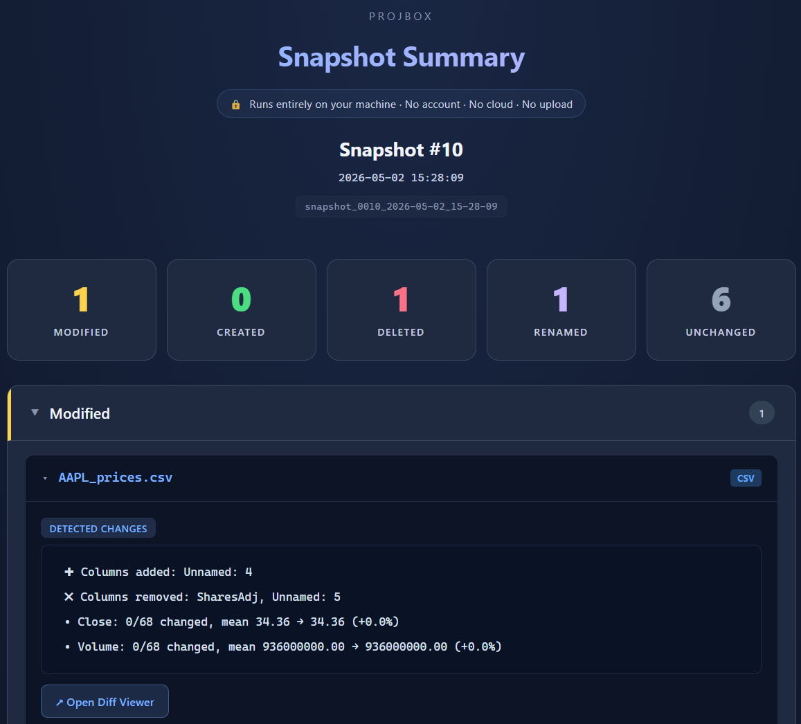
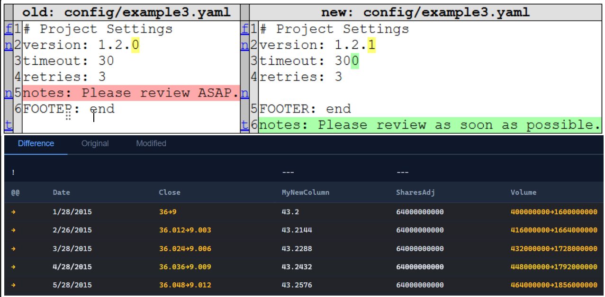
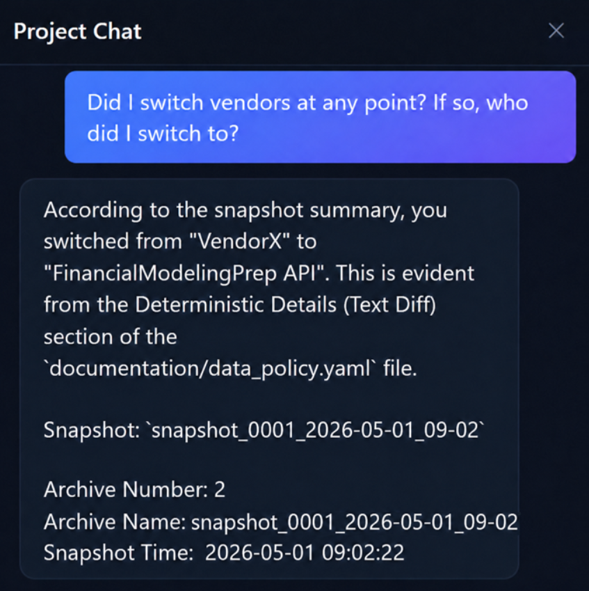
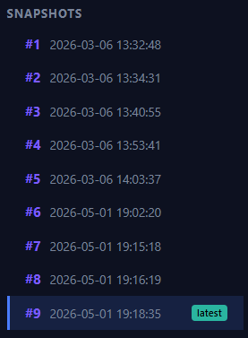

See every snapshot at a glance
Each snapshot gives you an instant summary of what changed since the previous version.
A local desktop app for Windows and macOS that turns your file changes into understandable project history. Every change, every version, explained in plain English.
Choose the project folder you want ProjBox to track through time.
Capture a point-in-time record of your project whenever your files change.
Review a clear summary of what changed since the previous snapshot.

Each snapshot gives you an instant summary of what changed since the previous version.

A built-in diff viewer shows you exactly what changed in your files.

A local AI helps you ask questions about project history in plain English.

Each snapshot preserves a point-in-time copy of your project so you can go back through earlier states.